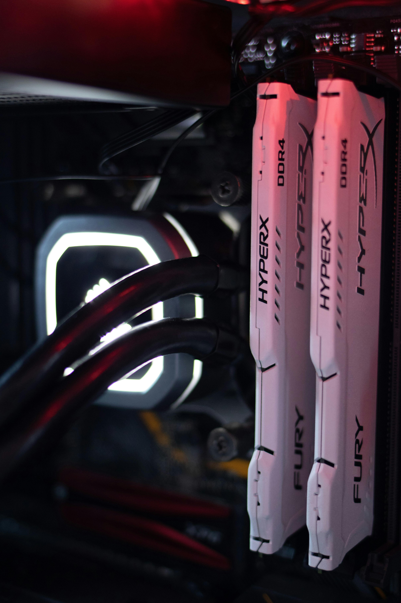

If you have an Intel CPU carefuly drop it in the socket and give a little tap on the CPU. Dont touch the pins on the motherboard. if you have an AMD CPU carefuly Drop it in socket. DONT TOUCH THE PINS if you have and AM4 CPU. If you touch them they will bent and the CPU will be broken. If you have and AM5 CPU dont touch the pins ont the motherboard.

The Memory installation is straight forward. Find the DIM slot on the motherboard (they are Long) And apply force to the RAM (Memory). Dont be scared to break the ram you wont break it.
Mount the motherboard to the case. Make sure your case has standoffs pre installed. If you case doesnt have standoof pre installed you can install them. To install them you will need yo put the standoff where there are hole in the the case. Make sure you put the standoffs in the right holes.
There are two types of CPU cooler AIO(all in one cooler) And air cooler. All in one cooler are a little more complex to install so we will start whit air cooler. Start by putting the CPU cooler upside down and find the heatpipes. There should be a little plastic film, remove the plastic film. Make sure there is Termal paste on the cooler(Gray Substances). If there are none you can apply some ont the motherboard. Just put a dot amount in the middle of the CPU. Now put the cooler on the CPU and connect the fan cable the the CPU fan header. It will be labeled CPU_FAN. Now for the AIO. Screw the fans to the radiator. Now screw the radiator the case screw the radiator to the top or the side of the case. Connect the Usb cable the to Usb header on the motherboard it will be labeled USB. Now connect the cable fan the the fan header on the motherboard it will be labeled FAN_HEADER. Now connect the the pump cable to the pump header on the motherboard iw will be labled PUMP.

If you have an m.2 ssd find the m.2 slot and gently puch it in. If you have a 2.5 inch SSD find the SSD bay and srew it in. If you have and mechanical hard drive find the hard drive bay and slide it in.

Find the pcie slot on the motherboard usualy under the the M.2 slot. Push the Graphics card in the pcie slot.

Find the power supply hole to put the power supply in. Screw the power supply whit the screws.